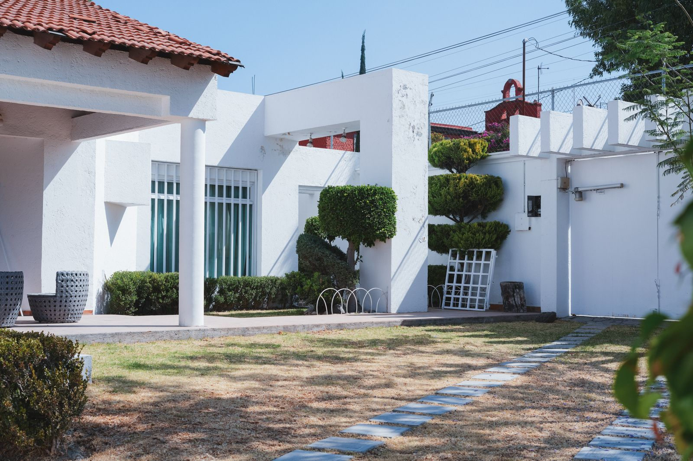
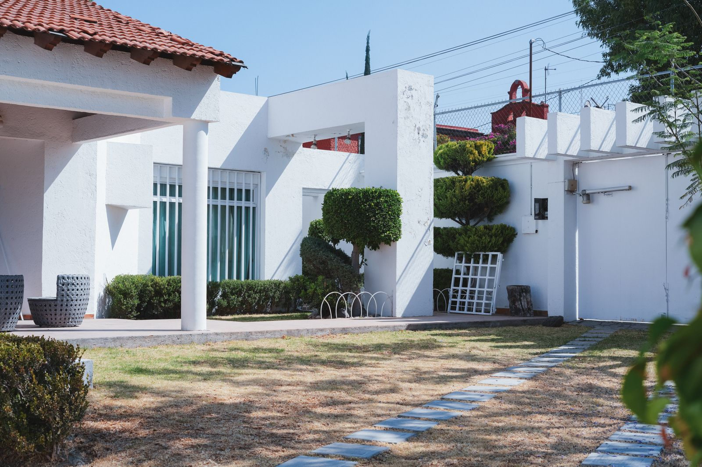

Detoxificación y estabilización
Supervisión médica para la seguridad del paciente en las primeras etapas del proceso.
En San Agustín te acompañamos con empatía, ciencia y calidez. Nuestro equipo multidisciplinario te ayuda a recuperar tu bienestar paso a paso.
Creemos en la dignidad y el valor intrínseco de cada ser humano, sin importar su historia o situación actual.
Modelos basados en evidencia, adaptados a tu historia y necesidades.
Supervisión médica para la seguridad del paciente en las primeras etapas del proceso.
Programas estructurados con terapia individual y de grupo, psicoeducación y rutinas saludables.
Atención ambulatoria, seguimiento terapéutico y acompañamiento en la reintegración.
Enfoque sistémico y cognitivo–conductual para trabajar causas y mantener avances.
Herramientas prácticas para situaciones de riesgo y fortalecimiento de redes de apoyo.
Atención integral cuando existe comorbilidad con depresión, ansiedad u otros trastornos.
Lenguaje claro, sin estigmas. Buscamos comprensión y soluciones reales.
Intervención y tratamiento gradual, seguro y humano.
Abordaje integral para metanfetamina, cocaína y otras sustancias.
Tratamiento combinado with psicoterapia y atención médica.
Protocolos clínicos para reducir riesgos y estabilizar.
Un camino claro para recuperar tu vida.
Te escuchamos. Entendemos tu historia, metas y preocupaciones, con confidencialidad total.
Evaluación médica y psicológica para definir el mejor nivel de atención.
Diseñamos un plan realista contigo y, si lo deseas, con tu familia.
Seguimiento cercano para mantener avances y prevenir recaídas.
Historias de esperanza y cambio (con autorización).
“Llegué con miedo. Hoy tengo herramientas y un equipo que confía en mí.”
“Entendimos como familia lo que pasaba y cómo acompañar mejor.”
“No es fácil, pero aquí me sentí visto y respetado. Eso lo cambió todo.”
Un vistazo a espacios que invitan a la calma.
 

Depende del nivel de atención y tus necesidades. Tras la valoración clínica te proponemos un plan y tiempos estimados.
Fomentamos la participación familiar. Definimos horarios y espacios para acompañamiento y psicoeducación.
Contáctanos con tus datos y verificamos cobertura y formas de pago disponibles.
Sí. La confidencialidad es un pilar ético y legal de nuestro trabajo.
Agenda una evaluación inicial o solicita más información.